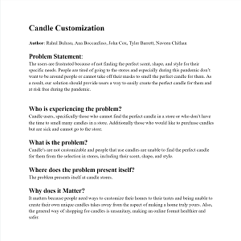
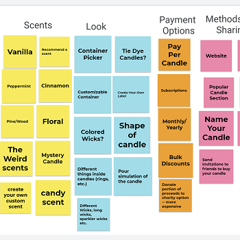
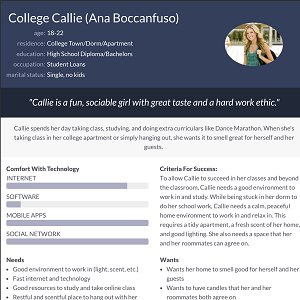
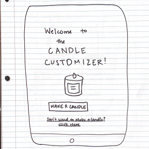
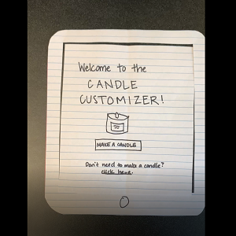
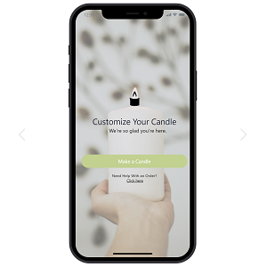
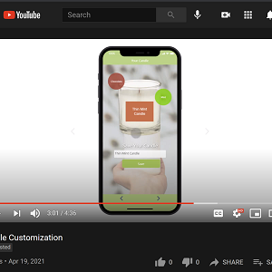

Problem Statement: Candles
The users are frustrated because of not finding the perfect scent, shape, and style for their specific needs. People are tired of going to the stores and especially during this pandemic don’t want to be around people or cannot take off their masks to smell the perfect candle for them. As a result, our solution should provide users a way to easily create the perfect candle for them and at risk free during the pandemic.
Affinity Diagram: Candles
The affinity diagram shows our group's ideas on everything candles.
Persona: 5 Personas for Candles
Five personas of typical candle app users.
Storyboard: 5 Stories of Utilizing the Candle App

These five different stories reflect how the personas would come to use the candle app.
Sketches
These sketches are five rough ideas of how our candle customizing app may be implemented.
Paper Prototype
A paper walkthrough of a potential design for the Candle Customizer application.
High-Fi Prototype: Candle Customizer App
A high fidelity prototype of our candle customizing app, with interactive elements and design.
Presentation: Candle Customizer App
A presentation of our high fidelity prototype candle customizing app, with descriptions of functionality and design. Also included is a description of a need for this app and our user base.